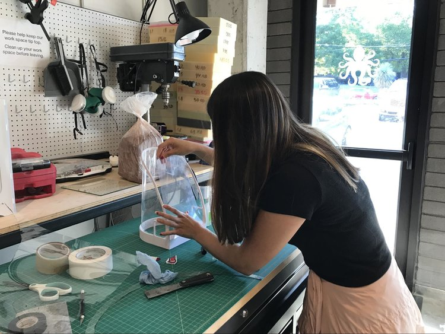
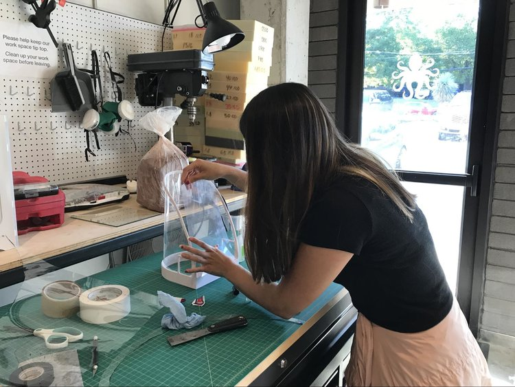

the smart,
small greenhouse
Our student team of design, business, and engineering students prototyped digital and physical models of a mini, connected greenhouse in just five weeks under the mentorship of Austin's argodesign.
Assignment focus: improving the high-end gardening experience, with respect to air in the garden.
My roles: creative direction, interaction design, concept art
For argodesign’s Center for Integrated Design course, we worked for a real argodesign client looking to deliver a more appealing gardening experience for the high-end consumer market. We were given a 5-week assignment, in which we were to spend one week on each of the following: communicating, where we familiarized ourselves with the team and the assignment; sensing, where we did our due diligence on the industry; thinking, where we identified and analyzed our ideas; making, where we began the prototypes; and finally, communicating, where we ultimately told the story about how our product can improve the gardening experience.
OUR BRIEF: “Our client seeks to provide sustainable, beautiful, high-end solutions to dedicated consumers who value their outdoor spaces.”

Since none of us were gardeners ourselves, we needed to get a better idea of what gardeners need and want. To do this, we did a few user interviews and conducted a field observation in a community garden.
Our first interviewee was a student at UT Austin, who grows a variety of flowers, herbs, and vines on his balcony. Our second interviewee was Jessica’s coworker, who has a garden backyard. We also noticed that, in the community garden, some plants were thriving while others withered in the Texas heat.
“I just move the pots around...I could set up a screen, probably should, but I was too lazy. There are a lot of plants that require slightly [different] climates, but I can’t do much about it” — UT Student
“Thrips and sudden cold fronts. Thrips hide in flowers and are near impossible to kill off... last winter we had 20-30 degree drops within an hour and the shock killed half my garden in no time (traumatic)” — Avid Gardener
Out of the pain points we found, we decided to focus on the common issue of flexibility: the climate and environment change at non-optimal cycles for sensitive plants in terms of sun exposure, wind, and temperature.

Beginning to ideate:
In an ongoing sketchbook, we documented a wide range of ideas, including bug repellent, pollen tracking, floor fan and ventilation, air quality sensor, energy generation, and many more ultimately rejected pitches.
One of our first ideas was a mini-incubator, since not only was it relevant to the element of "air", it also touched on a lot of the pain points: easily harmed saplings in suboptimal climates and overexposure to environmental factors like sun, humidity, and even pests. In order to narrow down our ideas, we voted on feasibility, importance to the consumer, and our personal interest. In the end, we landed on the mini-incubator.
After narrowing our options down to an incubator that would help with garden survival rates, we began to iterate on different shapes, sizes, and features. Our product offers the following:
- Ability to control the level of shade and light with an adjustable front shading panel.
- Ability to control internal humidity with discrete fans that circulate the air inside.
- Ability to control the temperature using a combination of the fan and the shade.
- A barrier to surrounding wildlife that may interfere with the growth of especially saplings.
- Remote controlled adjustments from your phone, for those who are often away from their gardens.
Prototyping our final solution:
The best thing about these kinds of interdisciplinary courses is each team’s access to a wide range of experiences and skills. We were lucky enough to have a mechanical engineer on our team, who led the way during the 3D modeling and printing process.
We then smoothed and spray painted our 3D model, and used shades, laminate, and lots of super glue to arrive at our final prototype.We wanted to make sure our product had the right shape and size for the average small-scale plant. We also wanted to make sure we had easily removable panels in case the plant inside is a fruit or herb, and requires easy access from time to time.
 

The final product:
Our solution finalized as Inku, the smart small greenhouse. Inku adapts to the environment around it by controlling sunlight, humidity, temperature, and watering, creating the perfect environment for whatever you choose to grow. Our physical product pairs with a mobile application for easy access to and increased understanding of your garden plants.
Reflections:
I wish we had more time to implement rather than just ideating on IoT features! Had this not been a 5-week assignment followed by a full semester of more project courses, we would have used an Arduino to enable a few connections to a mobile phone.One of my biggest takeaways was that you don't have to be an engineer to prototype and test a new product or an idea. We were able to put our super-glue and laminate model to the test and manually roll the shades up and down, since no real IoT was implemented. This way, you can gather feedback on the product without investing too much time or resources and make efficient, insightful changes to your model.
go to top
optimized
business travel
Under the mentorship and expertise of IBM designers and engineers, our student team ideated a new use case for IBM Watson's natural language processor under the topic of travel.
Assignment focus: Improving travel using Watson’s natural language processor.
My roles: Design research, interaction design.
For IBM’s Center for Integrated Design course, we worked with IBM Watson designers to validate use cases for its AI natural language processors in the form of a design case study. We were tasked with the challenge of developing a travel assistant with this technology. Our project went through many pivots — especially since many of our team members (me included) weren't initially excited about the idea of using a natural language processor as a travel assistant. It seemed mildly like overkill, but through our interview, synthesis, and validaing phases, we were able to come up with a solution we would be proud to present.
OUR BRIEF: “IBM Watson wants to find a way for its AI technology to assist travelers.”

To begin, we mapped out a couple of our assumptions from personal experiences with travel. Since we were students, a lot of our interviewees were also students, and we validated a lot of our assumptions about travel in general:
- while some are spontaneous, some are very uptight with logistics
- many travelers fear missing out on real, local experiences
- people trust personal suggestions over internet articles, etc.
- planning for a group is usually frustrating, and decision-making is a big pain point
We came up with 4 initial personas — go-with-the-flow, outdoorsy, relaxed, and uptight. We jumped the gun and began thinking about the improvements that AirBnb’s could use with the help of a voice assistant. Our research was all over the place. We realized we were designing for ourselves, and had no real, novel, value-add and no market niche to focus on.
Scoping down:
We decided that if we were going to get excited about this project, we had to narrow it down. We ended up with 12 interviewees, 5 of which happened to be corporate travelers. That’s when we realized, as we were synthesizing pain points, that corporate travelers have an abundance of unique needs and restrictions when it comes to traveling. If we design for this user, our solutions can potentially also apply to a broader audience. We knew if this was a solution a business traveler could get behind, it has to be incredibly efficient, usable, and valuable.
We came up with two personas:
So, what problem do we solve?
After we had the corporate traveler on our minds, we needed to come up with our final needs statements, and map out what our future state of business travel might look like. While we didn’t want to jump into solutioning just yet, we needed to understand which pain points to target as well as how to incorporate the natural language processor. We came up with the following needs statements:
Ellie needs a way to get great recommendations fast so that she doesn’t have to wrestle with indecision and can impress her coworkers
Ellie needs a way to connect with people in the city so that she feels like she is getting an authentic view of the city and doesn’t feel alone
Ellie needs a way to planning impromptu experiences around her work schedule so that she feels like she is maximizing her free time in an unfamiliar, new city.
Howard needs a way to find fast, convenient meals so that he doesn’t order in and miss out from a city’s local offerings
Howard’s employer needs a way to get Howard to explore the city so that Howard feels greater employee satisfaction and decrease dollars expensed on delivery fees and room service.
Corporate travelers need a lot of things. As someone who has traveled for business herself, I understand that there are frustrations with a business trip that are complex and inevitable — you’re busy, stressed, and away from home. We couldn’t possibly solve all of these problems, so we needed to come up with a final mission statement, or "hill" to overcome.
Who: A corporate traveler
What: can find a locally recommended place to eat
Value: within in 5 minutes
This is a pretty tall order, so at one of our draft presentations, we tried to solve all of them. We came up with features before we even came up with an app, which is why our app architecture turned out a little bit like this:
While we got a lot of positive feedback for our presentation, we were told that we needed to scope it down one more time. We should be thinking about what product to make before loading it with isolated features and content.
One last reframe:
One of us compared one of our features to the game of “20 questions”, and it seemed like everyone in the room had an epiphany moment. What if this app not only gave simple, easy, and personalized suggestions, but also almost gamified the travel planning process, with the fun of a guessing genie and the efficiency and ease of a limited back-and-forth conversation?
To test this out, we got together and played the roles out ourselves. A few of us would pretend to be the “guessing genie” that had to give a good, local suggestion for a place to eat, while the others would pretend to be the business traveler planning a client happy hour after work or grabbing a bagel on the way to work. (i.e., “What are you feeling for dinner today?” “Some Korean food would be nice.”, etc.)
We found a few things:
- The conversation really only took 3-5 back-and-forth’s, maximum
- Many of the questions we thought about asking could be done in the AI back-end. For example, instead of our “genie” asking how much time we have to eat or how far we were willing to travel, we could opt to connect to the user’s Google Calendar and email
- We absolutely needed to increase the usability of a voice assistant, since we were having trouble answering questions in person to our friends, much less a machine.
The final product:
So finally, we arrived at the Travel Genie.The Travel Genie utilizes IBM Watson’s natural language processor as well as connected data from other platforms and accounts in order to quickly and effectively help you make the best decision for what to do next.
The user must first answer questions about their hometown preferences, giving the Genie hints as to the user’s personality as well as determine which establishments are most liked by locals when other users come into town.
Then, the user may prompt the Genie with questions like: “Where can I grab coffee on the way to my meeting?”, or the Genie may alert the user when it spots a place nearby, like: “You’re passing a great Polish deli nearby that [another corporate traveler] has reviewed on a previous trip. Would you like to make a stop?”
Our intuitive UI is built in IBM’s Carbon Design language.

We presented our solution to a room of IBM Watson researchers, designers, and sponsor users, and got these nifty IBM Enterprise Design Thinking Co-Creator badges!
Refelctions:
Through this long process, I learned that it's absolutely okay to pivot your project even a few months in. It's much better to grind out some overhauls then end up with a product you can't absolutely stand behind.Another big lesson was that designing for someone just like you isn't always the best use of personas. Since we were all college students who tend towards spontaneous traveling, so this planning assistant wouldn't have been our cup of tea. We had to reach out of our comfort zones to find the best project fit for the task at hand, and it turned out to be hugely popular among the IBM employees and UT Austin professors we presented it to.
go to top
designing a
design agency
One of my major goals of my college career was to bridge the gap between the demand for design services among student organizations and local startups and the supply of talent at the design school. // CHECK US OUT
FALL 2016:
After a whole freshman year of business school, I decided I needed to explore the design world — as a hobby, of course. I interviewed for a leadership position in a new student organization called Design Collective that began my design career without me even knowing it. The story starts my sophomore year, where I was placed at the head of a client-facing group of design students.
As a sophomore accounting major leading a group of incredibly talented designers, I failed miserably.Though each of the four designers in Studio were incredibly talented, we only finished six projects that were actually implemented by our clients.
I never pushed the designers to do the work on time, nor did I set a great example myself. Since we were a part of a bigger organization, client work was not our main mission. On top of pushing out visual designs, we were mentoring new designers and serving as administrative leadership in DECO. If we were to continue as a branch, we had to restructure.
SPRING 2017:
That winter, I reflected (yes, actually reflected. There's a Google doc and everything.) on the future of DECO Studio:
- Ask for help when you need it. I decided I couldn't handle the workload along with my particularly heavy course work that semester, so midway through, I asked for a co-director. She turned out to be a blessing and more, and is now doing UX design at Amazon!
- Get over your imposter syndrome. Working with junior and senior design majors really got to me when I first began. I was too scared and shy to tell anyone to change aspects of their drafts, even though the whole point of the group was that we could critique each other for better final designs. As the semester went on, I gained more and more experience and confidence just by working with such a diversely talented group. On top of that, I realized that we all have our own fortes and style — also, no one ended up hating me for suggesting that they try a lighter shade of blue.
- Stop giving your clients work you aren't happy with. I guarantee you, even if you're showing them a suggestion that they made just to prove to them how bad it looks, 100% of the time, they'll love it. You're the designer! Stand by that specific line width till the ends of the earth.
After months of learning, growing, and changing, in my second semester as co-director, we grew from four to 15 members and completed almost 30 projects. These projects ranged from simple t-shirts for student organizations to a logo and web design for a small historical landmark.
This was the semester I felt comfortable sitting at the front of the table (with that dumb look on my face and my glasses slipping halfway down my nose bridge, but regardless), making suggestions and arguing for why a particular brand should have a certain feel or what makes a specific composition feel a little bit off.
The semester ran much more smoothly. Designers were responsible for contacting the client when the client fills out a response form. Designer met once a week for critiques and scheduled client meetings on their own time. Not only did we end up with much better-looking designs, but we also all learned so much from one another.
The new Studio was a huge improvement from the previous semester.
FALL 2017:
However, this version of DECO Studio did not go without its own set of problems. With increasing demand from clients, designers were over capacity during exam weeks. To counter that, we brought on more designers. The more designers, though, the less tight-knit the group felt and the harder it was for me to keep up with everyone's progress. Designers also wanted to be working on more than just visual design and start looking into UI/UX, web development, and more.
So, with the help and support of DECO Studio's designers, my co-founder and I created Tandem Studio, a design agency that offers affordable design solutions to students and local small businesses. By the fall semester of 2017, Tandem Studio already has more than 25 talented designers and currently has 31 in-progress projects.
We began to focus more on comprehensive projects that include not only visual design but also design thinking concepts. My co-founder, Coleman, and I hand-picked a group of diverse designers that could handle illustrations, coding, photography, videography, animation, and UI/UX. We also partnered with UT Austin's first interdisciplinary incubator, txconvergent.org, that connects business, technology, and design, to get hands-on experience working with technical startup teams.

For the new year, my co-founder and I made goals to bring in a few new features:
- A cohesive brand. An image for ourselves is crucial to our success and sustainability.
- Grant-based design services for pro-bono projects. We are being more selective with our projects, so we can concentrate on a few, really comprehensive projects.
- A closer-knit group of designers with a larger core leadership team. We want to foster the best culture so that we can push out our best work in the most efficient way.
- More training for our designers. This would range from client interactions to UX research processes, hosted by senior members and industry professionals.
AND FINALLY:
As of my senior year in college, I’ve passed off the director role to my talented friends, Efren Martinez and Minh Cao. My personal goal was to make sure the agency runs and grows organically and without a watchful eye — and seeing as I barely show up to meetings anymore (I swear, because I want to make sure the organization continues after my graduation, not because I’m lazy), my work here is done and I could not be more proud of this insanely talented and dedicated Tandem Family.
go to top